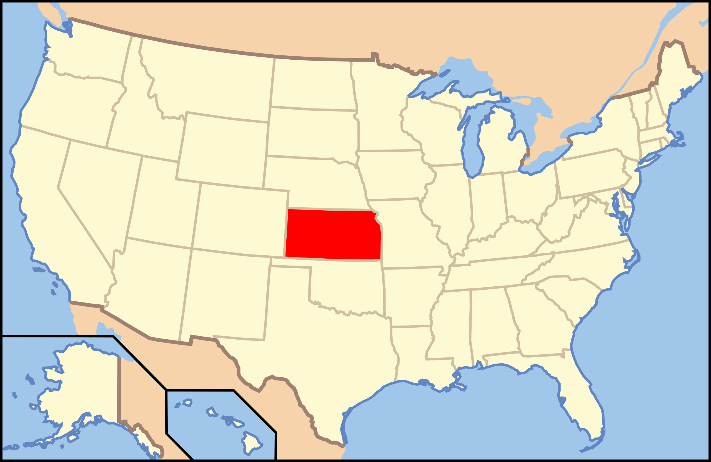

Kansas

1. Castle Rock - Castle Rock Badlands

Sarah Liberty/Flickr
| Grade: Short |
|---|
| More Images |
| Trail Link |
2. Horsethief Canyon - Kanopolis State Park

Lonnie Edgecomb/Flickr
| Grade: Moderate |
|---|
| More Images |
| Trail Link |